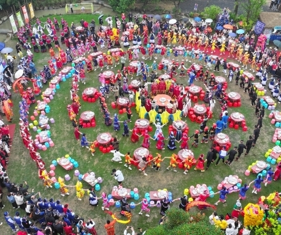
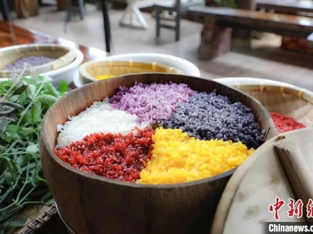
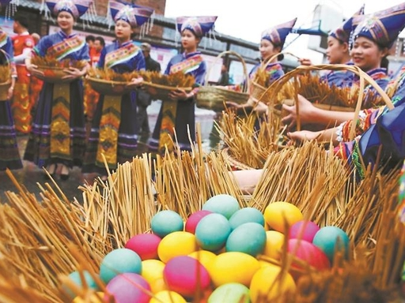
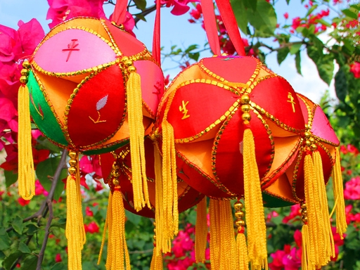
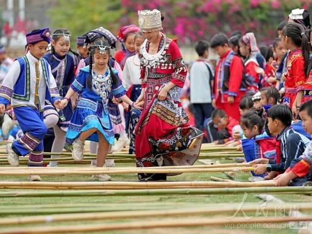
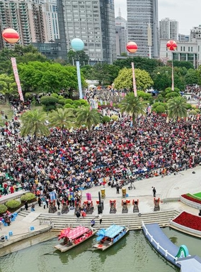

歌圩盛会 · 春日恋歌
每
年农历三月初三，是壮族最盛大的传统节日——"三月三"，又称"歌圩节"。这一天，方圆百里的青年男女身着盛装，从四面八方聚集到山坡、河畔、树林间，以对歌的形式寻找知音、表达爱意。
歌圩起源于古代壮族的祭祀活动，后来逐渐演变为集歌舞、交友、贸易于一体的综合性民俗盛会。歌声此起彼伏，此起彼伏的山歌如同春天的溪流，流淌在青山绿水之间。
除了对歌，人们还会制作五色糯米饭、碰彩蛋、抛绣球，整个节日充满了欢乐与浪漫的气息。

山歌好比春江水，不怕滩险弯又多
"妹在山头唱山歌，哥在山脚听情歌。若是真心来相会，请唱一首给我和。"
青年男女初次见面，通过歌声试探对方的心意和才华。
"什么花开在春天？什么鸟儿成双对？什么水流永不干？什么情深似大海？"
通过对唱问答，考察对方的智慧和反应能力，增进了解。
"藤缠树来树缠藤，生死不离半毫分。今生今世在一起，来生还要结婚姻。"
情投意合后，唱出誓言，互赠信物，确立恋爱关系。

用枫叶、红蓝草、黄姜等天然植物染制黑、红、黄、紫、白五种颜色的糯米饭，象征五谷丰登、吉祥如意。色彩斑斓，香气扑鼻，是三月三必备的美食。

青年男女手持煮熟的彩色鸡蛋，互相碰撞。蛋壳破碎者要将蛋送给对方，寓意"破壳而出"的爱情。这是一种含蓄而有趣的交友方式。

姑娘们精心制作绣球，上面绣着鸳鸯、蝴蝶等图案。在歌圩上，姑娘将绣球抛给心仪的小伙子，小伙子若接住并回赠礼物，便表示接受这份情意。

众人围成圆圈，随着节奏开合竹竿，舞者灵活跳跃其中。动作优美，气氛热烈，男女老少皆可参与，是歌圩上的重要娱乐活动。
三月三歌圩不仅是壮族的传统节日，更是中华民族文化多样性的生动体现。它承载着深厚的文化内涵：
在古代交通不便、社交受限的环境下，歌圩为青年男女提供了自由交往的平台，是重要的婚恋社交场合。
山歌中蕴含着壮族的历史传说、生产知识、道德伦理，通过口耳相传的方式，代代延续民族记忆。
歌圩期间，不同村寨的人们聚集一起，增进了彼此的了解和友谊，强化了族群认同感和凝聚力。
三月正值春耕时节，歌圩也包含祈求风调雨顺、五谷丰登的祭祀仪式，体现了农业文明的特点。
